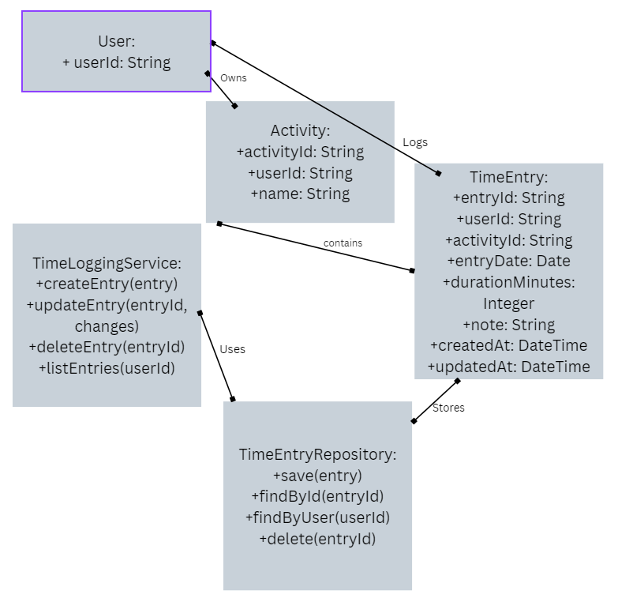
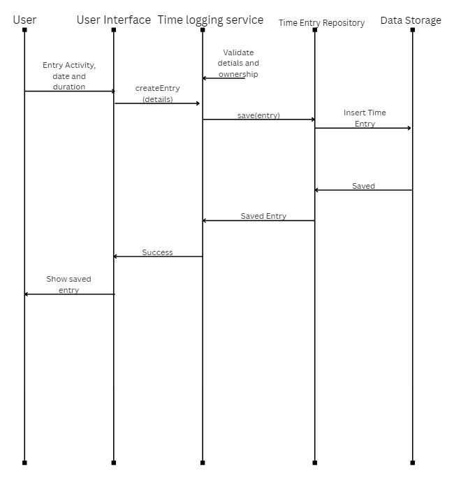

Time Logging & Data Storage
This page explains how TEMPO records time spent on activities, stores entries, and keeps the data correct when entries are created, edited, or deleted.
1. Data Model
TEMPO saves each time entry separately. Every entry belongs to one user and one activity, so users can log multiple sessions on different days.
1.1 Main Entities
| Entity | Main Fields | Purpose |
|---|---|---|
| User | userId | Identifies who owns each activity and time entry. |
| Activity | activityId, userId, name | Identifies the activity that the user tracks. |
| TimeRecord | entryId, userId, activityId, entryDate, durationMinutes, note, createdAt, updatedAt | Stores one session of logged time. |
A user can have many activities and entries. Each entry belongs to one activity. Goal details are covered on the Activities and Goals page.
1.2 UML Class Diagram

2. Time Logging Operations
Users can add, edit, or delete entries. The Time Logging Service checks each change before saving it.
2.1 Create a Time Entry
The user selects an activity, date, and minutes, then may add a note. TEMPO checks and saves the entry for progress tracking.
2.2 Edit a Time Entry
The user can change an entry's date, duration, or note. The activity associated with the entry cannot be changed after it has been saved. TEMPO checks the changes and updates the same entry. Progress calculations use the updated values.
2.3 Delete a Time Entry
After the user confirms, TEMPO deletes the entry. Its minutes no longer count toward totals or goals. The activity and goal remain.
2.4 UML Sequence Diagram

3. Storage, Validation, and Consistency
3.1 Data Validation
TEMPO checks that an activity is selected, the date is valid, and minutes are a positive whole number. It also checks that the entry and activity belong to the signed-in user. Invalid entries are not saved. Notes are optional.
3.2 Data Storage
TEMPO saves entries in a database so they remain available later. Each entry has a unique ID and links to a user and activity. The repository saves, finds, updates, and deletes entries. The architecture team will choose the database.
3.3 Changes to Calculations
Analytics uses saved entries to calculate minutes by activity and date. Creating, editing, or deleting an entry affects the calculations for the associated activity.
After a time entry is created, edited, or deleted, the Time Logging Service publishes a RecordChanged event. The analytics subsystem receives this event and invalidates affected cached reports so updated results can be generated.
Logging keeps entries correct. Analytics calculates totals, averages, and goal progress from the latest entries, or updates its summaries after a change.
3.4 Component Interactions
C-04: Time Logging Service checks requests from the user interface and sends valid changes to storage.
C-05: Time Entry Repository saves and finds entries. Progress and Analytics uses them for current results.
4. Design Rationale
DD-04: Save Each Time Session Separately
Related requirements: FR-10, FR-11, FR-13
Separate entries let users fix a session and let TEMPO calculate daily and weekly totals. This uses more storage than one total, but keeps more useful detail.
DD-05: Check Entries Before Saving
Related requirements: FR-09
The service checks dates, minutes, activity links, and ownership before saving. This helps prevent errors and protects user records.
DD-06: Save Entries and Calculate Progress from Them
Related requirements: FR-16, FR-18, NFR-01, NFR-02
Saved entries stay available across sessions. Calculating from entries avoids totals that can become outdated, though recalculating many entries may take longer.
5. Requirements and Components
| Requirement | Description | Component | Design Decision |
|---|---|---|---|
| FR-09 | Create manual time entries | C-04, C-05 | DD-05 |
| FR-10 | Store each session separately | C-04, C-05 | DD-04 |
| FR-11 | Edit existing time records | C-04, C-05 | DD-04, DD-05 |
| FR-12 | Confirm deletion of time records | C-04, C-05 | DD-05 |
| FR-13 | Display activity-specific time record history | C-05 | DD-04 |
| FR-16 | Calculate totals and daily averages | C-05, Analytics | DD-06 |
| FR-18 | Recalculate reports after time record changes | C-04, C-05, Analytics | DD-06 |
| NFR-01 | Preserve records across sessions | C-05 | DD-06 |
| NFR-02 | Use consistent duration units and reporting periods | C-04, C-05, Analytics | DD-06 |
| NFR-07 | Restrict access to each user's records when accounts are used | C-04, C-05 | DD-05 |